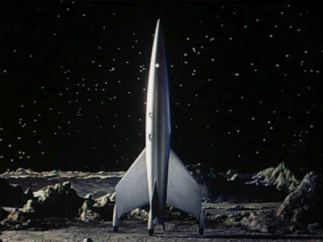

"Houston, we have a problem..."
Hazel wasn't even aware of the history behind her statement; she was born two years _after_ the 25th anniversary of Apollo 13.
Well over halfway to Mars, most of the crew of the Phoenix was in deep sleep. Three men and two women hibernated on the lower deck in a stack of tubes (they called them "coffins" when the radio wasn't on). Only Hazel was awake - her three-day shift would be over in another six hours. Then it would be Weinberg's turn to stare blankly at a console that cycled endlessly through 14 status displays that never showed anything but green. At least until today. Now display 7 showed a little block of yellow.
"... fuel shunt computer number two has ECC'ed again and has taken itself out of service. Computers one and three are still healthy."
Hazel cycled through the other status displays while waiting for an answer from Mission Control. Everything else seemed normal. Before today she hadn't even been aware that there was such a thing as a fuel shunt computer. But there were thousands of computers on board, each one replicated in triplicate. In this case, fuel shunt computer number two detected a serious memory fault that the Error Correction Code (ECC) could not recover, so it took itself off line. But this was not a serious problem since its two backup computers were still functioning normally. All three computers would have to fail before the fuel shunt function would need to be manually overridden, and the chances of a triple failure was almost zero.
"Phoenix, we copy. We'll have an answer in a few minutes. In the mean time, enable remote diagnostics over channel 15A, and we'll see what the problem is."
Hazel ran quickly through the menus. "Houston, remote diagnostics are now enabled over channel 15A."
Not much else to do for a while. Hazel clicked 'play', and Jon Anderson's voice swept away the silence, "Our home is our world, our life / Home is our world..."
"Alarm 942 ... Alarm 942 ... Alarm 942 ..."
Hazel's eyes slowly opened and she looked around. She thought she heard a voice.
"Alarm 942 ..."
Suddenly she snapped to attention. The console showed a block of red in column 4, row 2 of status display 9 - life support. Hazel clicked 'acknowledge'. Damn! How long had she been asleep? She checked the time - 18:23. She checked the radio log - the last transmission was at 16:12.
She examined the display. "Houston, looks like another ECC error, this time on an air mix computer. Make that two ECCs - units one and three are down. Unit two seems to be in good shape. We'll need a plan for manual override if we get a failure there."
While she waited for Mission Control's reply, she noticed a new button at the bottom of the display. 'Next Alert'. She clicked it, and display 12 came up. Almost half of it was either red or yellow, with several squares blinking red. "SHIT!!"
She stared blankly for a moment, then closed her eyes and took a deep breath. No problem. Start with the highest priority and work your way down. She thought about waking Chief Officer Weinberg early, but decided to at least get a good handle on what was going on first.
She opened her eyes again. The highest priority was guidance - complete failure. All three computers ECC'ed.
Hazel's stomach churned. Phoenix wasn't controlling itself any more. She would definitely have to wake Weinberg, and probably Chris Anthony as well, the navigation officer. It was a pity - Chris had just finished his shift and Hazel had relieved him. But continuing the mission was out of the question - they would have to swing around Mars and run yelping back home with their tails between their legs. She clicked 'acknowledge', and again the "Next Alert" button appeared at the bottom of the screen.
The pointer hesitated over the button for a moment before the click came.
Display 1 - communications. This one was mostly green, but two flashing reds demanded attention. Highest priority - reception, complete failure.
Hazel felt sick. No wonder Mission Control hadn't gotten back to her about the first failure - they couldn't get through. She shook her head and forced herself to concentrate. Only one computer had ECC failure, yet there was still no reception. Suddenly, the blinking red block turned yellow. A second later, it turned blinking red again. She was trying to make out what the computer said when a brilliant shaft of light came in through the small window on the port side. Hazel watched the shaft of light slowly scan across the cabin. She leaned over and squinted into the light as it passed by - the Sun inched its way across the window, and was gone.
Phoenix was slowly spinning.
That explained why radio contact was broken - the antenna wasn't pointed at Earth. The brief change to yellow must have been the antenna scanning past Earth's transmission beam.
OK, it was time to get Anthony up and at 'em. She almost gave a report to Mission Control, but then stopped. They couldn't hear her. Instead, she went through the menus and started Weinberg and Anthony 'thawing'. It would take about 45 minutes, and she went to work acknowledging the rest of the alarms.
It was pretty grim. A total of 59 computers had ECC errors - memory failures that usually indicated a hardware problem. But 59 of them? Could it be that the software that reported the errors was faulty? While she was running through the screens, three more ECC's cropped up, one of them in display 9 - life support.
She refused to think about the rate at which they were failing, consciously avoided figuring out how long it would take for life support to completely go out. All she needed to do was get the ship pointed back at Earth and manually hold it there long enough for Mission Control to tell them what to do.
An hour later, she threw a maintenance manual across the cabin. The main gyro was out, and the circuit needed to switch to one of the backups was also out. The manual gave instructions on how to manually patch in a backup gyro, but the access door wouldn't unlock. She had poured through the manual, trying to figure out an alternate way of getting a gyro in service, or failing that, how to navigate the ship without any gyros. The manual just sent her in circles.
If only Anthony would get up! How much longer was it, anyway? She brought up the screen - Anthony and Weinberg were scheduled to wake up in 45 minutes.
Huh?
She looked at the time - 19:43 - over an hour since she requested early wakeup. She checked detailed status - 'NN HOLD'. A specialized type of computer called a "Neural Network" was holding them asleep. It detected some anomaly and went into a safe hold, awaiting a re-learn sequence from the main source repository.
Which was on Earth.
The first stirrings of panic arose in her stomach. She started searching through the menus, looking for a manual override. There were plenty - one for each computer-controlled setting in the ship. But 'NN HOLD' wasn't a setting, and didn't have an override. She thought about disabling the NN altogether, but God only knew what would happen as a result of that. There was probably a way to disable just the part of the NN that was holding the crew asleep, but again, God only knew how that might be done. She searched the on-line manuals and found nothing.
Finally she unbuckled from her seat and pushed off toward the ladder leading to the lower level. She floated down and made her way to the deep sleep area. Seven tubes sat ready - two empty, five with heads visible. Hazel peered in, trying to see any sign of life, wondering what would happen if she just dragged one of them out and shook him awake. Maybe she would do it to Melissa Carter, the science officer. If it didn't work and ended up killing her, it would be the least serious loss given their present circumstances.
Her hands hovered in front of Carter's head, and then withdrew. Maybe later. First she would try again to find a way to manually navigate the ship.
She made her way back up to the upper level and started buckling herself in, then froze. The console wasn't displaying a standard screen any more. It was a screen full of hexadecimal numbers. Some kind of crash dump or something.
Hazel gave the keyboard a tentative poke. Then another.
Nothing.
Adrenaline surged, and Hazel fought the urge to grab the keyboard and batter the display. Again she closed her eyes and struggled with panic. She needed to reboot the main computer. There had to be something in one of the manuals for that. She opened her eyes again, and the lights went out. Except for the soft glow of the hex dump on the computer display, it was dark in the Phoenix.
Hazel screamed.
Still screaming, she kicked her way back to the ladder raced to the lower level. It was almost pitch dark, but she felt her way to the sleeping tubes. Not knowing who it was, she grabbed the first head she found and started pulling. The body slid out, wires coming loose, but stayed inert. A fault light came on above the tube, faintly illuminating the face of Gary Stafford, chief engineer.
Not the best choice.
Hazel gibbered incoherently and shook Stafford, trying to wake him up, but she got no response. Finally, exhausted, she ran out of energy and went limp. Stafford slowly floated away, his arms slowly orbiting his body, eclipsing the fault light every few seconds.
She must have dozed, for she slowly became aware that the room was much lighter. She looked around to see where the light was coming from. All seven sleep tubes had their fault lights on. Stafford was over by the ladder, his arm hooked casually around one of the rungs.
"Gary? You awake?"
No response.
Hazel dozed again.
When she woke, she refused to open her eyes. She mentally visualized being in her sleep tube. It was time for her shift change. Chris would be outside, getting ready to climb in his coffin. She kept her eyes closed, knowing that he would become annoyed and tell her to get her butt moving. If she just waited another minute, he would say something. Anything. She felt something touch her head. She smiled and looked.
She was no longer on the far side of the room. She had drifted over to ladder and Stafford's free hand was dangling right above her head.
She idly wondered why she didn't scream again. No energy. Sleep again? No. She stared dully into the semi-dark. She was actually getting bored. She gently moved Gary's hand. It was cold, but Hazel barely winced. She drifted out and around him, and made her way to the upper level. Unfortunately, there was no hatch that she could seal shut.
The computer console still glowed softly with its hex dump.
She drifted to the small window and looked out. A brilliant blue/white "star" slowly drifted across. Earth. She continued staring, squinting as the Sun drifted by. Then a small fat orange crescent. Mars. The trajectory that Phoenix followed actually carried it slightly beyond Mars' orbit, and they were now "falling" toward Mars. If the ship came back to life and fired its main engines at the right time, Phoenix would enter into orbit around Mars. Otherwise, they would sling by the leading face of the planet, dumping some of their own orbital energy onto Mars, imperceptibly speeding the planet up while significantly slowing Phoenix down.
Hazel remembered the failure trajectory - it would keep them in the planetary plane and send them inside Venus' orbit before slinging them back toward Earth in about two years time. But not very close to Earth. Even if Hazel could survive those two years, the chances that a rescue ship could meet her were close to zero.
Closest approach to Mars was in about three more weeks. For some reason, she desperately wanted to survive till then. But with the ship in this state, there was no way. The air was already getting stuffy.
Hazel sighed and looked back to the main computer console. Just then, the Sun sent its bright beam across the cabin. As it swept across, Hazel saw the cabinet full of manuals. Somewhere in one of those volumes was the computer reboot procedure. Of course, the computer might crash immediately after reboot, but what the hell.
There wasn't anything else to do.
Ten thousand millions free
To the westward light
The dreamers represent
This arc of peace
-- Yes, "The Ladder"
This is where I originally planned to end the story. It was a story about a disaster where the main character panics, then gets tired of panicking, and since there isn't anything else to do, she just continues plodding. But my readers demanded to know what happened.
One reader in particular, Duffy Toler, wouldn't take no for an answer. He had written a story of his own, a strange SF where all of what we think is reality is really a "standing wave in a tank of liquid nitrogen", controlled by a computer. This was LONG before "The Matrix" hit the movie screens (although well after William Gibson's stories that inspired "The Matrix"). Anyway, since Duffy was so insistent on my "finishing" the story, I put him into it.
"Hazel?"
...
"Hazel..."
A signal. A pattern. Oxygen-starved neurons sluggishly reacted. A good match is found. Synapses fire, gaining strength. The pattern demands action. But action comes slowly.
"HAZEL!"
A gasp. Eyes fly open. A surge of energy, which quickly dissipates. Eyes droop again.
"OH NO YOU DON'T! HAZEL! SWITCH TO BACKUP OXYGEN! NOW, GODDAMIT!"
"wha..." Hazel managed to twist her head. Where was she? Who was here?
"On your right. Three feet away. An orange valve. Turn it."
Hazel looked to her right. A short distance away a panel door hung askew. It looked battered. She stared at it uncomprehendingly.
"Come on, Hazel. Just a little pushoff. Drift over there. DO IT!!!"
Her eyes blinked. She gave a little nudge and slowly drifted toward the panel.
"Reach in, Hazel. The orange handle. GRAB THE HANDLE!!"
Another weak surge. Hazel reached in and gave the handle a weak tug. Her body twisted slightly and drifted, but the handle didn't move. Once again, her eyes started to droop.
"TURN IT, YOU FUCKING BITCH!!!"
Pattern match. Synapses fire. Old pathways respond. Eyes snap open. Muscles contract. The handle turns.
There's a faint hissing noise. Eyes droop closed again.
Time passes.
"Hazel?"
A shuttering breath. Another. A rush of oxygen feeds hungry brain cells. Heart beat strengthens. The hissing nose continues. A deep breath.
A body starts to awaken.
"Hazel..."
Hazel's eyes slowly open. "Who's there?"
"You've also got to turn off the CO2 scrubber. You're still not breathing right."
"Scrubber?"
"There's a yellow toggle switch right beside the Oxygen shunt. Flip it."
Hazel looked around, saw her hand on the Oxygen shunt valve, saw the yellow toggle. She was still confused. "Why should I shut off the scrubber?"
"I told you, you're not breathing right. Oxygen level is low, so you should be breathing hard. But CO2 level is almost non-existent, so your brain doesn't see the need to breath heavy. Look, just do it, OK?"
Hazel flipped the switch. Then she looked around again, her head slowly clearing. "Where are you? WHO are you? Alan, is that you?"
"Alan is dead. So is the rest of your crew. As for me, you can call me duffy; I'm a standing wave in a tank of liquid nitrogen, which means I'm not really here. And neither are you. But it's as close to being real as *I* need, so let's just run with it, OK?"
Hazel pushed off toward the ladder and peered down to the lower deck. "I have no idea what you're talking about. But I need some help here, so come on up and give me a hand. What the hell happened?"
"I can't come up and give you a hand because I'm NOT THERE, DAMMIT! Why do I even bother telling you things?"
"If you're not here, how can I hear you?"
"You're not. That is, there are no sound waves traveling through the air. My standing wave is just synch with your's somehow. Probably because I was so mad at your being such a bonehead. Jesus! Not even checking the Oxygen pressure! One of the few mechanical gauges on this entire ship, and you don't bother with it!"
Hazel decided that she must be hallucinating - hardly surprising given the circumstances - but she also decided that this particular hallucination was at least useful. She indeed hadn't checked the Oxygen pressure, and hadn't even thought about the CO2 scrubbers affecting her breathing.
She pushed off and floated to the small window. A thin orange crescent filled the view. It wouldn't be long before they entered Mars' shadow. Then they would swing low over the leading face and drop into a lower solar orbit. She knew she would have to re-point the ship so that at closest approach she could see the ...
"OK, let's get this crate turned around so we can do the orbital insertion burn."
Hazel paused, almost didn't answer. "No."
"Huh? What do you mean, no?"
Hazel turned, but of course only faced an empty cabin. "There's no way I can do the burn. I can't get the ship pointed exactly right, I have no idea when to start and stop the burn. Better I should just follow the failure trajectory and give Earth a chance to recover the..."
"Oh, give it a rest! Didn't I tell you that we're just standing waves in a liquid nitrogen tank? The waves are maintained by a computer, which I managed to hack into. I have the burn calculated. I'll help you fine tune your orientation. Now come on. We've only got an hour, and you'll probably screw up a few times. We need about 76 degrees bearing 29.5..."
Hazel sighed and drifted to an open panel that had a handful of wires hanging out.
"There. It's about time. Next time I say a tenth of a second, try to keep it under a second, OK?"
"SHUT UP! The wires sparked and momentarily welded together."
"If you had held both wires, it wouldn't have..."
"DO YOU WANT A BURN OR DON'T YOU??? LAY OFF ME!"
"Ooooh, touchy, aren't we? I didn't think your period started for another week and a half."
Hazel almost swore, but caught herself. "When do we start the burn?"
"Commence burn in T minus 48 seconds and counting! 47! 46! 45! ..."
"Just tell me when to start the damn burn."
"What IS your problem, lady?"
"Oh, just the fact that whether this works or not, I'm going to be dead in a few days. What's the point?"
"Oh, yeah. I forgot. You're all upset because you're going to end up dead ... EVERYBODY ENDS UP DEAD FOR CHRIST SAKE!!! YOU'LL end up dead on the surface of FUCKING MARS!!! How fucking bad can THAT be? But OH NO! You don't like the way I make nice with you! I'm so mean to you, and now you want to run away and cry! Why can't you..."
"Uh, Duffy, when am I supposed to start the burn?"
"SHIT!!! WE'RE LATE!!! HIT IT!!!"
Hazel hit the ignition override button. The ship shuttered as the engines came to life.
Hazel raised her voice, although she wasn't sure why she needed to shout at a hallucination. "HOW LONG?"
"GOD THE FUCK DAMN IT!!! WE WERE SIX SECONDS LATE! THIS COULD MESS UP THE WHOLE INSERTION! IF YOU HADN'T BEEN SUCH A WHINING LITTLE..."
"HOW LONG???"
"20 SECONDS, BUT I'M RU-RUNNING THE SIMULATION."
"HOW LONG DOES THE SIMULATION TAKE?"
"... UH ... ABOUT A MINUTE AND A HALF ..."
"I DON'T SUPPOSE YOU SEE A MISMATCH THERE, DO YOU?"
"SHUT UP SHUT UP SHUT UP!!! LET ME THINK!!!"
Hazel continued counting in her mind. When she reached 20, she released the button and engine died.
All was quiet. Hazel drifted to the window and looked out, but all she could see was a few stars. Mars went out of view when she pointed the ship.
"Damn."
Hazel didn't respond.
"It's a shitty orbit. We'll hit the upper atmosphere each time around. Twenty, maybe thirty orbits, and the ship augers in. Damn."
"You mean we really will go into orbit?"
"OF COURSE WE'RE GOING INTO ORBIT! Jesus!"
Hazel started to get excited. "Can we get the lander down?"
"OF COURSE WE CAN GET THE LANDER DOWN!"
"Duffy! You're a GENIUS! Cripes, what am I saying? I'm complimenting a hallucination. We're probably half-way to Jupiter right now."
"Idiot. Turn the ship 20 degrees."
Hazel drifted back to the thruster panel. A few minutes later, she returned to the window and looked out, squinting against the brilliant sun.
She couldn't see Mars in the glare for a minute. Then ... the Sun dimmed, turned red, distorted. Mars limb glowed as the Sun slid down to the horizon and winked out. She couldn't see the entire orb in the small window, and no surface features were visible. But she could see a few wispy clouds glowing in the Martian sunset.
It was worth it. Even if she never made it into orbit, if she never made it to the planet surface, seeing the Sun set behind Mars made the whole thing worthwhile.
"Beautiful, isn't it? You done good. Sunrise in twenty minutes."
Hazel was too choked up to answer. She blinked to clear her eyes. The Martian atmosphere glowed warmly.
The lander was similar to the old Apollo LEM. Two parts: one to provide a soft landing, the other to get back off the surface. But unlike the LEM, this lander had to contend with an atmosphere and a HELL of a lot more gravity. The way down wasn't too bad - a heat shield and parachutes took them most of the way down, and a retro-rocket put the finishing touch on the landing. Going back up was also straight forward, but used a tremendous amount of fuel. That part was the limiting factor on what they could bring back to Earth.
It was during orbit three that Hazel separated from Phoenix and started her descent. There wasn't anything to do until she was about 600 meters above the surface. Then she had to start her burn. But without computer control, it was going to be tricky to get a soft landing, especially since she would be doing it almost blind - the cameras were digital.
A make-shift mirror mounted on the ceiling allowed her a small view out a window as she sat before an open panel. She couldn't fine-tune the thrust since the fuel pumps were on stepper motors, so she would have to pulse the engine - something the engine wasn't designed to do.
"See anything, Duffy?"
"I can only see what you see, babe."
The area they were parachuting toward was rocky and cratered. Chances were high that even if they landed reasonably softly, they would still tip over. Hazel was in her pressure suit just in case the hull breached, which made it EXTREMELY hard to touch the wires together to ignite the engine.
"OK, you better start the fuel flow. But don't ignite yet."
Hazel hit the fuel override button. Although she couldn't see it, a mixture of liquid oxygen and hydrogen started pouring out of the bottom of the lander.
Time seemed to drag by. Hazel longed to get up and go to the window to *really* see the Martian surface getting closer, but she needed to be with the wires if they wanted any hope of landing safely.
"Better do it. I can't tell how far up we are, but it might be about 600 meters."
Hazel touched the wires. A sudden explosion rocked the lander as part of the engine nozzle broke apart. Thrust was drastically reduced due to improper flow of the hot gasses.
"Whoa! Man, I hope we stay upright during descent!"
"Shut up. Should I start pulsing?"
From the mirror, Hazel could see the surface getting larger.
"Not yet. We're still falling too fast. In fact, I don't think you'll need to pulse at all. Why don't you twist those wires together and brace yourself - this is liable to be rough."
Hazel twisted the wires together and looked around the cramped lander cabin. The seats seemed like the best bet, but she didn't know if she should buckle in or not. As she climbed into the middle seat, training took over and she automatically buckled in. Now even the mirror didn't give her a view out the window, and the screens were all dark. Talk about blind.
"Shouldn't we be landing abou..."
The lander hit a large boulder. Half of the lower stage tore away while the rest of the lander lurched to the side. It started turning, but the downward velocity was still very high. The bottom of the lander buckled like an accordion and the upper frame split. The crew cabin was still intact and hit the surface on the side of a deep crater. As it slid down on its side, most of the cabin wall was abraded away, filling the inside with swirling dust. The cabin then tumbled the rest of the way down the side of the crater.
If Hazel had been conscious, she would have seen 3000 gallons of liquid Oxygen and Hydrogen explode just outside the crater, sending a flaming mushroom cloud into the sky.
"Hazel?"
Not again.
"Why don't you shut up and let me die in peace?"
"HA! You're a great kidder. That's why I love you. Now don't just hang there, let's get a look around!"
Hazel opened her eyes. Faint light filtered in through a thousand holes in what used to be the wall of the cabin. She did her best to wipe her faceplate clear of dust with her left hand - her right arm didn't seem to work very well. Hopefully it was just dislocated or something ... not that it mattered much. The cabin was on its side and Hazel was hanging by the seatbelt from one of the seats.
She released the buckle and let herself down. Gravity was less then Earth, but the pack on her pressure suit was still damn heavy. Those Apollo guys had it easy.
There was a reasonable sized hole at one end of the cabin. "You think I can fit through there?"
"Sure. Just be careful not to rip your suit. What's wrong with your arm?"
"Dunno. Probably broken. Not exactly my biggest worry right now."
She made her way to the hole and climbed out.
Mars.
She knew she should be all choked up and emotional again, but dammit, her arm hurt too much.
She was at the bottom of a crater that looked to be about 50 meters deep. The side that the cabin had come down was deeply scored and had cables dangling from the top. She might be able to climb there.
Ten minutes later, she was soaked in sweat and breathing so hard she wheezed. She was maybe 15 meters away from the lip of the crater, and she was despairing of ever reaching it. She had a cable wrapped around her good arm and one leg, and was trying to catch her breath.
"Hey Duff," she panted, "you think you could grab the other end of the cable and haul me up?"
"You're doing great, Hazel! Just a little farther!"
"Call a tow truck, will ya? I need a hand."
"I'll give you half a hand. Swish. HAHAHAHA I'm such a cut-up."
Hazel smiled in spite of herself. "So, there's nothing you can do?"
"How about if I promise you great sex if you make it to the top?"
"Just what I need - getting preggers on another planet."
After another minute, she continued her struggle.
The pressure gauge showed that there was definitely a slow leak in her pressure suit. She decided not to figure out how much time she had left and instead concentrate on her surroundings.
Rock-strewn and heavily cratered, a low mountain in the distance, faint clouds in a blue/black sky. Although she could see dust blowing, she couldn't feel the wind. All she could hear was her own breathing.
Magnificent desolation, indeed.
Duffy had gone quiet the moment she had crawled out of the crater, and she hadn't called to him. Was he there? Had he ever been there? Where was the great sex he had promised?
She smiled faintly and started walking.
Hazel lay on the ground. The sunset had been glorious; she had cried from joy rather than despair. Now the cold appeared ready to take her before her air ran out. Which was just as well. She had no desire to suffocate.
Duffy was gone. She had called and he didn't answer. She was completely alone.
The stars shown down on her. Earth wouldn't rise for hours, way too late for her. But seeing the Milky way so clear, so bright, filled her with child-like awe. One star in particular seemed to be getting brighter. It was probably an illusion - maybe one of those "near death" things with the bright tunnel. It was awfully damn bright. What the hell? A meteor coming straight at her? She threw her arm across her faceplate to block the glare. A faint rumble could be heard, and a hot wind buffeted her suit.
Then all was quiet and dark again.
She lowered her arm and in the faint starlight saw a ship.
A sleek, silver ship.
With a point on top and big fins on the bottom. Straight out of a 1950's comic book.
A hatch opened on the side and a rope ladder tumbled out. An Intrepid Explorer climbed down the ladder and bounced over to her. The explorer leaned over her and they touched helmets. She could heard muffled shouting.
"Hey, babe. You ready for that great sex I promised you? I gotta killer hammock back there in my ship. Come on!"
He helped her to her feet and they walked toward the massive space ship. Somebody from inside was lowering a chair on a rope and gesturing to her.
Hazel glanced back and saw a space suit laying on the ground.
Then she rejoined Duffy, eager to explore the stars.
